080 — Namespaces, RBAC, NetworkPolicy y admission
Parte: 06 — Kubernetes y plataformas administradas
Nivel: intermedio-avanzado · Horas estimadas: 4
Laboratorio: security · Estado: EXECUTABLE_CORE
🎯 Propósito
Acotar quién puede hacer qué y quién puede hablar con quién dentro del clúster, que es la tercera fuga de la clase 072. Dos valores por defecto explican casi todos los problemas: todos los pods pueden alcanzar a todos los pods, en cualquier espacio de nombres, hasta que alguien escribe una política; y una política de red no hace nada si el complemento de red no la implementa, con el objeto creado y visible. La clase cierra además el patrón que este programa ha visto en cuatro plataformas: el permiso suma y lo que resta vive en otro sistema.
📚 Resultados de aprendizaje
Al finalizar podrás:
- Delimitar qué acota un espacio de nombres y qué no, y por qué no es una frontera de seguridad fuerte.
- Conceder permisos contando los caminos indirectos, no solo los directos.
- Escribir políticas de red sabiendo que seleccionar un pod lo cambia a denegar por defecto.
- Comprobar que las políticas se están aplicando de verdad, con una prueba negativa.
- Imponer el endurecimiento de la clase 069 con admisión en vez de con revisiones manuales.
🧩 Conceptos centrales
| Concepto | Comprensión verificable |
|---|---|
espacio de nombres |
Ámbito para nombres, cuotas, permisos y selectores. No aísla la red ni el núcleo: es una frontera administrativa, no una de seguridad fuerte. |
permiso aditivo |
El control de acceso solo concede; no existe una regla que reste. Cuarta plataforma del programa con la misma propiedad, y la misma consecuencia: lo que acota vive en otro sistema. |
camino indirecto |
Permiso que concede acceso a algo distinto de lo que nombra: crear pods da acceso a los secretos del espacio; emitir testigos da la identidad de una cuenta de servicio. |
denegar por defecto por selección |
Una política de red no añade denegaciones al clúster: cambia a denegar por defecto los pods que selecciona, y solo en la dirección que declara. |
complemento de red que no implementa |
Si el complemento instalado no soporta políticas, el objeto se crea, se lista y no filtra nada. No hay ningún error. |
admisión de seguridad de pods |
Mecanismo integrado que rechaza o avisa sobre pods que no cumplen un perfil. Es el endurecimiento de la clase 069 impuesto por la plataforma. |
🧠 Modelo mental
Kubernetes es un sistema de reconciliación: declaras estado deseado y controladores reducen continuamente la diferencia con el estado observado.
Aplicado a esta clase, separa siempre cuatro planos: intención (qué necesita el usuario), configuración (qué declaramos), estado observado (qué existe de verdad) y evidencia (cómo sabemos que cumple). Confundirlos produce diseños que se ven correctos en un diagrama pero fallan al operar.
🗺️ Flujo de razonamiento

📖 Desarrollo
1. Qué acota un espacio de nombres y qué no
El espacio de nombres se usa como si fuera una frontera de seguridad y no lo es. Lo que sí acota:
nombres de objetos dos servicios pueden llamarse igual en espacios distintos
cuotas y rangos de límites clase 078
permisos un rol vale dentro de su espacio
selectores las políticas de red y los presupuestos seleccionan dentro
secretos y configuración y quien pueda crear pods ahí, los lee (clase 076)
Lo que no acota, y es donde está el malentendido:
la RED por defecto, cualquier pod alcanza a cualquier pod
de cualquier espacio de nombres
el NÚCLEO es uno solo para el nodo (clase 063)
los nodos dos espacios pueden compartir la misma máquina
los recursos de clúster nodos, volúmenes, definiciones de tipos, roles de clúster
La primera línea sorprende siempre y merece comprobarse una vez:
$ kubectl run t --rm -it -n desarrollo --image=nicolaka/netshoot -- \
curl -s -m 3 http://bd.produccion.svc:5432 -o /dev/null -w '%{http_code}\n'
000 # conecta: el puerto responde, no habla HTTP
Un pod de desarrollo alcanzando la base de datos de producción sin ninguna configuración especial. Es el equivalente de AllowVnetInBound de la clase 039 y de la ausencia de segmentación de la 051: la conectividad es el estado inicial y el aislamiento es trabajo explícito. Tercera plataforma con la misma propiedad.
De ahí se deduce cómo repartir espacios de nombres, que es por quién los administra y qué políticas necesitan, no por comodidad:
uno por equipo y entorno permisos, cuotas y políticas distintas
plataforma aparte componentes compartidos, con permisos propios
lo no confiable, en otro sitio ver más abajo
Y la honestidad sobre el aislamiento entre inquilinos, que conviene decir con claridad:
espacios de nombres suficiente entre equipos de la misma organización
que ejecutan código revisado
no suficiente para código de terceros o de clientes:
comparten núcleo, nodos y plano de control
para eso clústeres separados, o aislamiento reforzado
(máquinas ligeras, núcleo en espacio de usuario,
clase 063)
Un clúster compartido por equipos de la misma empresa es un caso; ejecutar código arbitrario de clientes en espacios de nombres es otro, y el segundo exige lo de la tercera línea.
2. El permiso suma, y los tres caminos indirectos
El control de acceso de Kubernetes es puramente aditivo: hay reglas que conceden y no hay reglas que quiten. Cuarta plataforma del programa con la misma propiedad, después de AWS, Azure y Google Cloud, y ya se puede afirmar como regla general del oficio:
El permiso suma, y lo que resta vive en otro sistema con otro error. Aquí ese otro sistema es la admisión.
Los objetos son cuatro y su combinación cubre todo:
rol permisos DENTRO de un espacio de nombres
rol de clúster permisos sobre recursos de clúster, o plantilla reutilizable
vinculación asocia un rol a un sujeto, dentro de un espacio
vinculación de clúster lo mismo, en el clúster ENTERO
Y el error más caro es usar la cuarta cuando bastaba la tercera:
$ kubectl get clusterrolebindings -o json | jq -r '.items[]
| select(.roleRef.name=="cluster-admin")
| "\(.metadata.name): \(.subjects[]?.kind)/\(.subjects[]?.name)"'
Cualquier resultado inesperado ahí es administración total del clúster, incluida la lectura de todos los secretos de todos los espacios.
Y los tres caminos indirectos, que una auditoría que solo mire verbos directos no encuentra:
1. crear pods en un espacio → leer todos sus secretos (clase 076)
2. emitir testigos de una cuenta de servicio → actuar como ella
3. crear o vincular roles → concederse a uno mismo lo que quiera
El tercero tiene una protección integrada que conviene conocer porque a veces se desactiva: no se puede conceder un permiso que uno mismo no tiene, salvo que se tenga el verbo de escalada. Comprobar quién lo tiene es la pregunta correcta:
$ kubectl get clusterroles -o json | jq -r '.items[]
| select(.rules[]? | (.verbs[]? == "escalate") or (.verbs[]? == "bind"))
| .metadata.name'
Y las cuentas de servicio son la identidad de las cargas, con dos hechos que hay que fijar:
cada pod tiene una, y si no se declara usa la predeterminada del espacio
el testigo se proyecta con caducidad corta y con audiencia declarada
El primero produce un exceso de permisos silencioso: la cuenta predeterminada la comparten todos los pods del espacio, así que cualquier permiso que se le conceda lo tienen todos. La higiene es dar una cuenta propia a cada carga y desactivar el montaje automático donde no hace falta:
spec:
serviceAccountName: api
automountServiceAccountToken: false # si la carga no habla con la API
La mayoría de las aplicaciones no hablan con la API de Kubernetes, así que la mayoría no necesita ningún testigo montado. Quitarlo elimina una credencial de dentro del contenedor, que es lo que un atacante busca primero.
Y la conexión con las partes 02 a 04: la cuenta de servicio del clúster puede federarse con la identidad de la nube, de modo que el pod obtiene credenciales del proveedor sin ninguna clave. Es el mismo contrato de las clases 026, 038, 050 y 069, aplicado por séptima vez:
metadata:
annotations:
# la anotación concreta depende del proveedor (clase 083)
identidad-nube/rol: "arn:…:role/api-tienda"
Y con la misma condición crítica de siempre: la confianza del lado de la nube tiene que estar acotada al espacio de nombres y a la cuenta concretos. Sin acotar, cualquier pod del clúster puede pedir esa identidad.
3. Una política de red no deniega: cambia el modo del pod
Este es el concepto peor entendido de la clase y produce dos errores opuestos.
sin ninguna política todos los pods se alcanzan entre sí
con una política que SELECCIONA un pod
ese pod pasa a DENEGAR POR DEFECTO en la dirección que la política declare
y solo se permite lo que la propia política (o otra) autorice
Es decir: la política no añade una prohibición; cambia el modo de los pods que selecciona. Y solo en su dirección: una política de entrada no afecta a la salida.
La consecuencia práctica es que el primer objeto que hay que escribir en un espacio de nombres es el que lo cierra:
apiVersion: networking.k8s.io/v1
kind: NetworkPolicy
metadata: {name: denegar-todo, namespace: tienda}
spec:
podSelector: {} # todos los pods del espacio
policyTypes: [Ingress, Egress]
Sin reglas, eso deja el espacio cerrado en ambas direcciones. Y a partir de ahí se abre lo necesario:
apiVersion: networking.k8s.io/v1
kind: NetworkPolicy
metadata: {name: api-permitido, namespace: tienda}
spec:
podSelector: {matchLabels: {app: api}}
policyTypes: [Ingress, Egress]
ingress:
- from:
- podSelector: {matchLabels: {app: web}}
- namespaceSelector: {matchLabels: {kubernetes.io/metadata.name: red}}
podSelector: {matchLabels: {app: entrada}}
ports: [{protocol: TCP, port: 8080}]
egress:
- to: [{podSelector: {matchLabels: {app: bd}}}]
ports: [{protocol: TCP, port: 5432}]
- to:
- namespaceSelector: {matchLabels: {kubernetes.io/metadata.name: kube-system}}
podSelector: {matchLabels: {k8s-app: kube-dns}}
ports: [{protocol: UDP, port: 53}, {protocol: TCP, port: 53}]
Esa última regla es la que se olvida siempre y produce el incidente más desconcertante: una política de salida sin permitir la resolución de nombres rompe absolutamente todo, incluidos los destinos que la propia política permite, porque el pod no puede resolver sus nombres.
síntoma "permití la base de datos y sigue sin conectar"
causa no puede resolver bd.tienda.svc
Y una precisión sobre los selectores que produce reglas más abiertas de lo previsto:
# DOS orígenes: cualquier pod del espacio red, O cualquier pod con app=web
from:
- namespaceSelector: {matchLabels: {name: red}}
- podSelector: {matchLabels: {app: web}}
# UN origen: pods con app=entrada DENTRO del espacio red
from:
- namespaceSelector: {matchLabels: {name: red}}
podSelector: {matchLabels: {app: entrada}}
La diferencia es un guion. La primera forma es mucho más permisiva de lo que la mayoría pretende escribir.
Y el fallo silencioso de esta clase, octava aparición de la familia de la clase 060:
si el complemento de red instalado NO implementa políticas,
el objeto se crea, se lista, aparece en el inventario
y NO FILTRA NADA
No hay error, no hay aviso, y el panel de cumplimiento dice que el espacio está segmentado. La única forma de saberlo es probarlo:
$ kubectl run atacante --rm -it -n desarrollo --image=nicolaka/netshoot -- \
nc -zv bd.tienda.svc 5432
nc: connect to bd.tienda.svc port 5432 (tcp) failed: Connection timed out ✓
Esa prueba negativa debería estar en el guion de verificación y ejecutarse en cada clúster, porque el complemento de red puede cambiar en una migración.
4. Imponer el endurecimiento en vez de revisarlo
La clase 069 dejó una lista de once puntos de endurecimiento. Revisarla a mano en cada pull request no escala; imponerla en la admisión sí.
El mecanismo integrado son los perfiles de seguridad de pods, con tres niveles:
privilegiado sin restricciones
base impide lo obviamente peligroso: modo privilegiado, espacios
de nombres del anfitrión, capacidades peligrosas
restringido además: sin privilegios, sin capacidades salvo una,
sin elevación, perfil de llamadas al sistema declarado
Y se aplican por espacio de nombres, con tres modos que permiten adoptarlo sin romper nada:
apiVersion: v1
kind: Namespace
metadata:
name: tienda
labels:
pod-security.kubernetes.io/enforce: restricted
pod-security.kubernetes.io/enforce-version: latest
pod-security.kubernetes.io/warn: restricted
pod-security.kubernetes.io/audit: restricted
audit lo registra y lo permite → para medir el tamaño del problema
warn avisa a quien lo despliega → para que los equipos lo vean
enforce lo rechaza → cuando el inventario ya cumple
Es exactamente la secuencia que este programa ha aplicado en tres nubes: inventariar, corregir y después imponer. Empezar por el modo de rechazo bloquea despliegues legítimos y termina con la etiqueta quitada «temporalmente».
Y el perfil restringido exige justo lo de la clase 069, lo que cierra el círculo:
securityContext:
runAsNonRoot: true
runAsUser: 10001
allowPrivilegeEscalation: false
capabilities: {drop: [ALL]}
seccompProfile: {type: RuntimeDefault}
readOnlyRootFilesystem: true
Para lo que el perfil no cubre —reglas propias de la organización— está la validación en la admisión con expresiones, que evita tener que operar un servicio externo con los riesgos de la clase 073:
apiVersion: admissionregistration.k8s.io/v1
kind: ValidatingAdmissionPolicy
metadata: {name: solo-huellas}
spec:
matchConstraints:
resourceRules:
- apiGroups: ["apps"], apiVersions: ["v1"], operations: ["CREATE","UPDATE"],
resources: ["deployments"]
validations:
- expression: >-
object.spec.template.spec.containers.all(c, c.image.contains('@sha256:'))
message: "las imágenes deben referenciarse por huella (clase 061)"
Eso impone por sí solo dos reglas de partes anteriores —despliegue por huella de la clase 061 y verificación de firma de la 067— sin depender de que nadie las recuerde. Y a diferencia de un complemento externo, no puede dejar el clúster bloqueado si un servicio se cae, porque se evalúa dentro del propio servidor de API.
Y el conjunto de comprobaciones que conviene automatizar sobre un clúster:
# 1. espacios sin perfil de seguridad
$ kubectl get ns -o json | jq -r '.items[]
| select(.metadata.labels["pod-security.kubernetes.io/enforce"] == null)
| .metadata.name'
# 2. espacios sin política de red que los cierre
$ for ns in $(kubectl get ns -o name | cut -d/ -f2); do
[ "$(kubectl get netpol -n $ns --no-headers 2>/dev/null | wc -l)" = "0" ] \
&& echo "sin políticas: $ns"
done
# 3. cuentas con administración total
$ kubectl get clusterrolebindings -o json | jq -r '.items[]
| select(.roleRef.name=="cluster-admin") | .metadata.name'
# 4. pods con testigo montado que no hablan con la API
$ kubectl get pods -A -o json | jq -r '.items[]
| select(.spec.automountServiceAccountToken != false)
| "\(.metadata.namespace)/\(.metadata.name)"' | wc -l
5. La tercera fuga, calificada
La clase 072 predijo que Kubernetes renombraría la fuga de identidad sin resolverla. Con lo visto, la calificación es matizada y merece precisión.
lo que Kubernetes SÍ aporta
un modelo de permisos propio, uniforme y auditable
identidad de carga integrada, federable con la nube
admisión: el sistema que RESTA, con perfiles listos para usar
un objeto de segmentación de red declarativo
lo que NO resuelve y devuelve a quien lo opera
la conectividad total por defecto: hay que cerrarla a mano
los caminos indirectos de permiso: hay que contarlos igual
la comprobación de que las políticas se aplican: hay que probarla
el aislamiento fuerte entre inquilinos: no lo da
El segundo bloque es exactamente la misma lista que la parte 05 dejó abierta, con nombres nuevos. Y la novedad propia —el objeto de política de red que puede no hacer nada— añade una fuga en vez de cerrar una.
Y hay una diferencia respecto de las nubes que conviene señalar porque cambia el diseño: en las partes 02 a 04, la red y la identidad eran del proveedor y estaban siempre activas. Aquí, la política de red depende de un complemento que se elige al montar el clúster, con lo que la seguridad de red del clúster es una decisión de instalación, no de configuración. La clase 083 vuelve sobre esto porque cada plataforma gestionada trae complementos distintos.
Y la lista de comprobación de la clase, que alimenta el proyecto de la 084:
☐ un espacio de nombres por equipo y entorno, con cuota y rango de límites
☐ política que cierra cada espacio en ambas direcciones, y aperturas explícitas
☐ resolución de nombres permitida en toda política de salida
☐ prueba negativa que demuestra que las políticas se aplican de verdad
☐ ninguna vinculación de clúster con administración total fuera de la plataforma
☐ una cuenta de servicio por carga; testigo desmontado donde no se use
☐ federación con la nube acotada al espacio y a la cuenta concretos
☐ perfil de seguridad de pods en modo de rechazo, tras haber medido con auditoría
☐ políticas propias en la admisión para huella de imagen y firma
☐ auditoría de permisos que cuente los tres caminos indirectos
Diez puntos, de los cuales tres son pruebas y no configuraciones — que es la proporción que este programa ha ido defendiendo desde la clase 046.
🔬 Ejemplo trabajado
CloudShop audita su clúster antes de admitir a un segundo equipo. Los cinco hallazgos comparten una propiedad: todo estaba configurado y casi nada estaba comprobado.
Hallazgo 1 — las políticas de red no filtraban nada.
El clúster tenía 14 políticas de red escritas hacía ocho meses. La prueba:
$ kubectl run atacante --rm -it -n desarrollo --image=nicolaka/netshoot -- \
nc -zv bd.produccion.svc 5432
Connection to bd.produccion.svc 5432 port [tcp/*] succeeded!
El complemento de red instalado no implementaba políticas. Los objetos existían, se listaban y el panel de cumplimiento los contaba como control activo.
```text antes después complemento de red sin soporte de con soporte políticas políticas que filtraban de verdad 0 de 14 14 de 14 prueba negativa ninguna en el guion, por espacio tiempo que llevaban sin efecto 8 meses —
Octava aparición de la familia de fallos de la clase 060, y la más incómoda de la parte: **el control existía, estaba documentado y no hacía nada**.
**Hallazgo 2 — al activar las políticas, todo dejó de funcionar.**
```text
api Error: getaddrinfo EAI_AGAIN bd.tienda.svc
Las políticas de salida no permitían la resolución de nombres, así que ningún pod podía resolver nada — ni siquiera los destinos que la política permitía explícitamente.
```text antes después regla de resolución de nombres ausente en las 14 políticas fallo tras activar total ninguno plantilla de política del equipo no había con la regla incluida
La corrección fue añadir la misma regla a las catorce, y la medida de fondo fue una plantilla que ya la trae.
**Hallazgo 3 — cuarenta personas con administración total.**
```bash
$ kubectl get clusterrolebindings -o json | jq -r '.items[]
| select(.roleRef.name=="cluster-admin") | .metadata.name'
cluster-admin
desarrolladores-admin ← 38 personas
soporte-admin ← 4 personas
La vinculación de desarrolladores se había creado durante la puesta en marcha «temporalmente». Concedía lectura de todos los secretos de todos los espacios, entre otras cosas.
```text antes después personas con administración total 42 2 roles por equipo ninguno editor en su espacio acceso a producción permanente temporal, con solicitud (clase 038) caminos indirectos auditados no los tres, trimestral
Y al contar los caminos indirectos, el número efectivo antes de la corrección era mayor que 42, porque quien podía crear pods en un espacio leía sus secretos.
**Hallazgo 4 — el testigo de la API montado en todo.**
```bash
$ kubectl get pods -A -o json | jq -r '.items[]
| select(.spec.automountServiceAccountToken != false) | .metadata.name' | wc -l
186
$ # de esos, los que realmente hablan con la API:
4
Ciento ochenta y dos contenedores con una credencial del clúster montada dentro sin usarla — exactamente lo que un atacante busca tras conseguir ejecución de código (clase 069).
```text antes después pods con testigo montado 186 4 cuentas de servicio propias por carga 3 de 21 21 de 21 uso de la cuenta predeterminada 18 cargas 0 permisos de la cuenta predeterminada heredados de una vinculación amplia ninguno
**Hallazgo 5 — el endurecimiento revisado a mano no se cumplía.**
La lista de once puntos de la clase 069 se revisaba en los pull requests. Medida con el perfil en modo auditoría durante una semana:
```text
pods que incumplían el perfil restringido 31 de 74
incumplimientos más frecuentes
sin runAsNonRoot 22
capacidades no retiradas 19
raíz escribible 17
sin perfil de llamadas al sistema 28
```text antes después mecanismo revisión manual admisión modo — auditoría → aviso → rechazo tiempo de adopción — 6 semanas pods que incumplen 31 de 74 0 de 74 excepciones — 2, con motivo y fecha
Las dos excepciones son un agente de recolección que necesita acceso a rutas del nodo, con su justificación escrita y revisión semestral.
**Y la comprobación que se añadió al guion de verificación:**
```bash
$ ./verificar-aislamiento.sh
✓ desarrollo → producción:5432 tiempo agotado
✓ tienda → kube-system:6443 tiempo agotado
✓ tienda/web → tienda/api:8080 conecta
✓ tienda/api → tienda/bd:5432 conecta
✓ tienda/api → internet:443 tiempo agotado
✓ resolución de nombres desde tienda correcta
6/6 correctas
Resumen:
```text antes después políticas de red efectivas 0 de 14 14 de 14 personas con administración total 42 2 pods con testigo de la API montado 186 4 pods que incumplen el endurecimiento 31 de 74 0 de 74 cuentas de servicio propias por carga 3 de 21 21 de 21 pruebas negativas de aislamiento 0 6
**La lección que esta clase traslada al resto de la parte 06**: los cinco hallazgos existían con la configuración escrita, revisada y documentada. Lo que faltaba era la comprobación, y en el caso más grave —catorce políticas de red sin efecto durante ocho meses— la comprobación es una sola orden desde un pod cualquiera. **La tercera fuga de la clase 072 se confirma con un matiz: Kubernetes no solo devuelve las obligaciones de identidad y de red, sino que añade una propia** — un objeto de seguridad que puede existir sin que nada lo implemente.
## 🧪 Laboratorio guiado
Ejecuta desde la raíz:
```bash
python classes/part-06-kubernetes-managed-platforms/080-namespaces-rbac-networkpolicy-y-admission/lab.py
El laboratorio selecciona el motor de práctica security y produce
lab_result.json. El escenario, sus comprobaciones y el artefacto esperado corresponden a
esta clase; no requiere credenciales y deja explícito qué debe revalidarse en un sandbox real.
- Lee
exercise.stepsy formula una predicción antes de ejecutar. - Ejecuta la práctica y verifica todos los elementos de
checks. - Provoca el caso de
negative_testy explica la señal observada. - Materializa
tenant-kubernetesenevidence/usando la plantilla indicada. - Para proveedor real, sigue
sandbox.requires, registra costo y ejecutadestroy.
Evidencia esperada
El artefacto principal es un control con amenaza, mitigación y evidencia. Además, la entrega debe incluir el comando ejecutado, la salida estructurada y una conclusión que no exceda lo observado.
🏆 Reto verificable
Construye tenant-kubernetes para el caso CloudShop. Incluye una alternativa descartada,
un supuesto que pueda falsarse, una prueba de fallo y una decisión de rollback.
✅ Criterio de aceptación
- [ ]
lab.pytermina con código 0 y genera JSON válido. - [ ] La entrega conecta al menos tres requisitos con mecanismos verificables.
- [ ] Existe una prueba positiva y una prueba negativa con evidencia.
- [ ] Seguridad, costo y operación aparecen como decisiones, no como anexos.
- [ ] Se declara una limitación y una condición que obligaría a revisar el diseño.
- [ ] Otra persona puede repetir el recorrido sin conocimiento tácito.
⚠️ Errores frecuentes
| Síntoma | Causa probable | Corrección |
|---|---|---|
| Las políticas de red existen y cualquier pod alcanza cualquier otro | El complemento de red instalado no implementa políticas, y el objeto se crea igualmente | Comprueba con una prueba negativa desde un pod real, y repítela en cada clúster y tras cada migración de complemento. |
| Al activar políticas de salida todo deja de funcionar | No se permitió la resolución de nombres, así que no se resuelven ni los destinos permitidos | Incluye siempre la regla hacia el servicio de nombres, y ten una plantilla de política que ya la traiga. |
| Una regla de red es mucho más abierta de lo previsto | Dos selectores como elementos separados de la lista son dos orígenes distintos, no una intersección | Combina espacio y pod en el mismo elemento cuando quieras intersección; la diferencia es un guion. |
| Una auditoría de permisos da un número tranquilizador y falso | Solo se contaron los verbos directos y no los tres caminos indirectos | Cuenta crear pods, emitir testigos y vincular roles; el permiso efectivo es la unión. |
| Casi todos los contenedores tienen una credencial del clúster dentro | El testigo de la cuenta de servicio se monta por defecto | Cuenta propia por carga y montaje desactivado donde la aplicación no hable con la API. |
| El endurecimiento se revisa en cada cambio y aun así no se cumple | La revisión manual no escala y las excepciones se cuelan | Impón el perfil en la admisión, adoptándolo por fases: auditoría, aviso y rechazo. |
🛡️ Seguridad, ética y costo
Trabaja con cuentas propias o sandboxes autorizados. No publiques secretos, identificadores reales ni datos personales. Antes de crear recursos pagos define presupuesto, etiquetas y comando de destrucción; después verifica que no queden recursos huérfanos. Los ejemplos locales enseñan contratos, pero no certifican cumplimiento ni disponibilidad de producción.
❓ Preguntas de comprobación
- ¿Qué acota un espacio de nombres y qué no, y por qué no basta para inquilinos no confiables?
- ¿Qué ocurre exactamente cuando una política de red selecciona un pod, y en qué direcciones?
- ¿Por qué una política de salida rompe todo si no permite la resolución de nombres?
- Enumera los tres caminos indirectos de permiso y qué concede cada uno.
- ¿Qué secuencia de adopción evita que un perfil de seguridad de pods bloquee despliegues legítimos?
🔗 Referencias
- Kubernetes (2025). Using RBAC authorization — roles, vinculaciones, escalada y protecciones. https://kubernetes.io/docs/reference/access-authn-authz/rbac/
- Kubernetes (2025). Network policies — semántica de selección, direcciones y requisitos del complemento. https://kubernetes.io/docs/concepts/services-networking/network-policies/
- Kubernetes (2025). Pod Security Admission — perfiles, modos y adopción por fases. https://kubernetes.io/docs/concepts/security/pod-security-admission/
- Kubernetes (2025). Validating Admission Policy — políticas con expresiones dentro del servidor de API. https://kubernetes.io/docs/reference/access-authn-authz/validating-admission-policy/
- Kubernetes (2025). Multi-tenancy — límites del espacio de nombres como frontera y alternativas. https://kubernetes.io/docs/concepts/security/multi-tenancy/
- Documentación oficial vigente del servicio implementado; registra URL y fecha de consulta.
📥 Descargar: Parte 06 en PDF · Manual integral